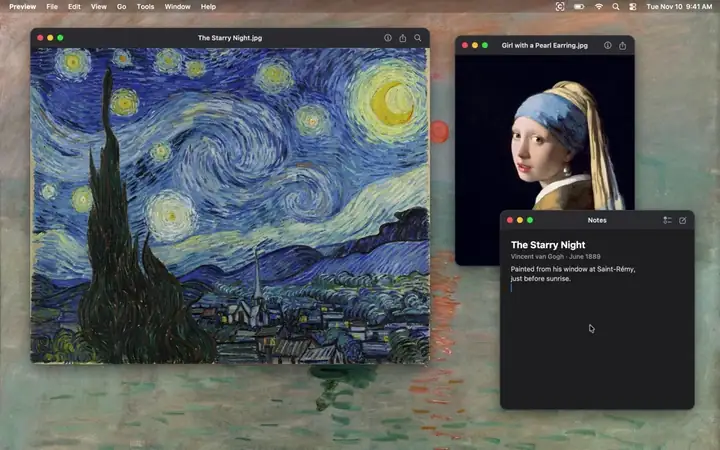
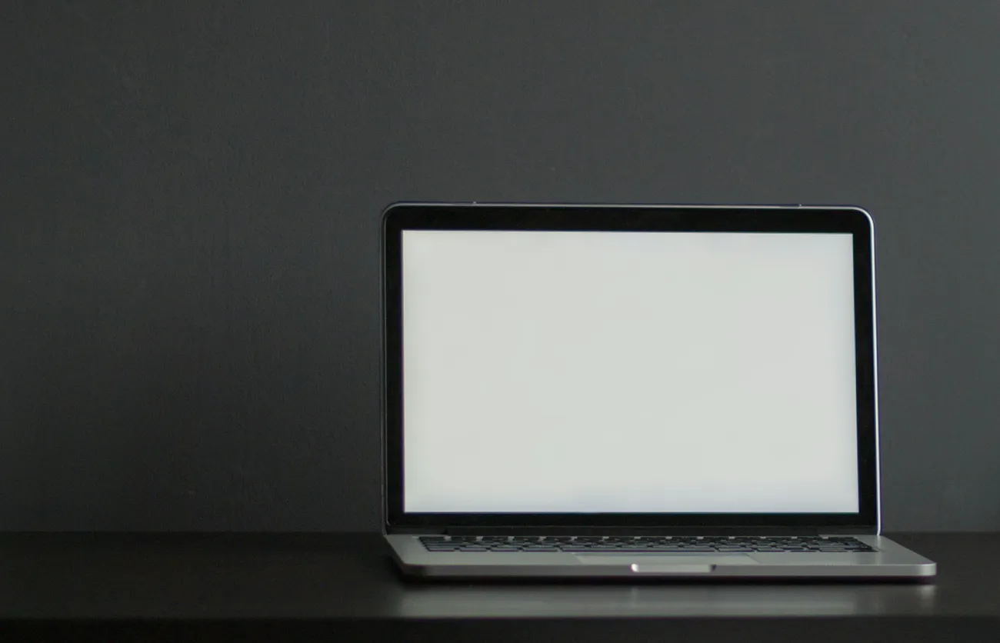
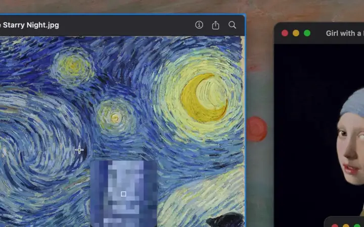
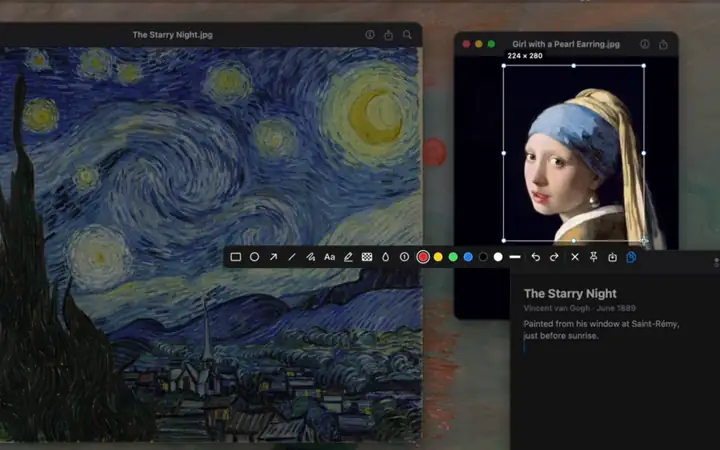
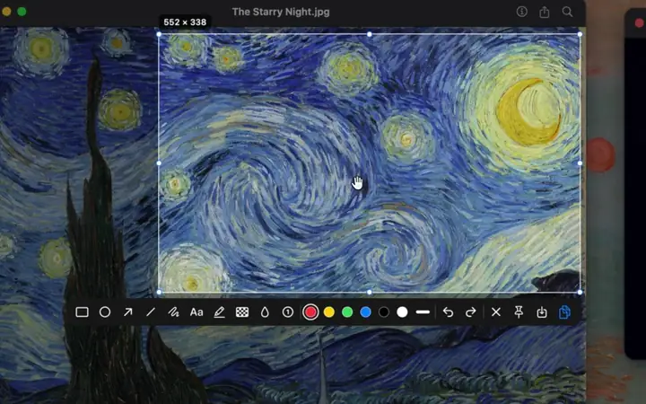
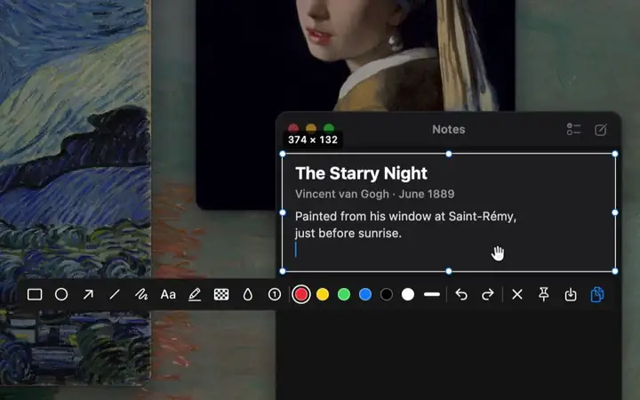
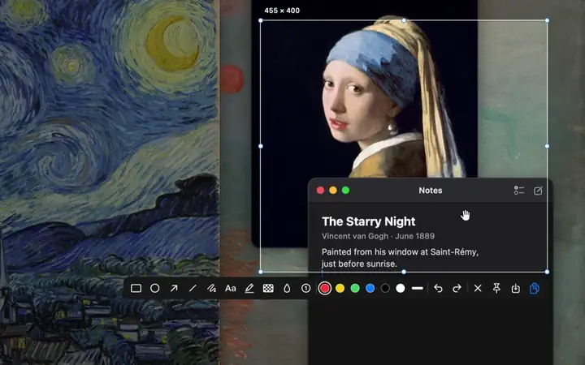
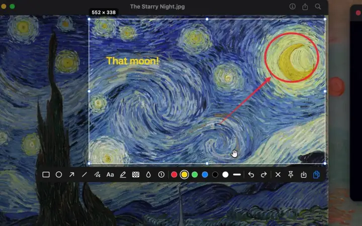

Area and window capture
The screen freezes the moment you start, so menus and hover states stay put. Hover a window to grab it whole, or drag any area.
QuickSnip is a fast, keyboard-first screenshot tool for macOS. Press ⇧⌘K, pick an area or a window, mark it up if you want, and finish with one key.
brew install --cask yvorcer/tap/quicksnip
One key to finish
Once you’ve selected something, a single key decides what happens to it.
Straight to the clipboard, ready to paste anywhere. Return and double-click work too.
A PNG in the same folder as your macOS screenshots. ⇧⌘S picks a place.
Floats the screenshot above every window while you work.
Copies the whole screen, with anything you’ve drawn on it.
Before you drag anything, C, S and P act on the window under the pointer. Esc closes the capture at any point.
Features

The screen freezes the moment you start, so menus and hover states stay put. Hover a window to grab it whole, or drag any area.

A magnifier shows the pixels and color under the cursor. Nudge with the arrow keys, resize with the handles. Captures are full Retina resolution and never resampled.
C copies, S saves, P pins, F copies the full screen.

Float a screenshot above everything else while you work. Drag it, scroll to zoom, copy it again later.

R rectangle, O ellipse, L line, A arrow. Hold ⇧ for perfect squares, circles and 45° lines.

D draws freehand. H highlights text without hiding it.
T adds a label. N drops 1, 2, 3… to walk someone through. Double-click text to edit it.

M pixelates and B blurs, so faces, names and anything private stay private.
1–6 pick red, yellow, green, blue, black or white. [ ] make lines thinner or thicker. Select a mark first to restyle it.

Drag any mark to move it. Delete removes it, ⌘Z and ⇧⌘Z undo and redo.
Works on every display. Capture on any connected screen, at that screen’s full resolution.
Fits into macOS. Plays the familiar screenshot sound, saves where macOS screenshots go, and can launch at login.
Keyboard shortcuts
These are the defaults. To change the capture shortcut, the finishing keys or any tool’s key, choose Keyboard Shortcuts… from QuickSnip’s menu-bar menu. Hover any toolbar button while capturing to see its current key.
| ⇧⌘K | Start a capture |
| C · Return · double-click | Copy to clipboard |
| S | Save to your screenshot folder |
| ⇧⌘S | Save As… |
| P | Pin to screen |
| F | Copy the full screen |
| Esc | Close, at any point |
| R | Rectangle |
| O | Ellipse |
| A · L | Arrow · Line |
| D · H | Pen · Highlighter |
| T · N | Text · Numbered step |
| M · B | Mosaic · Blur |
| Same key again | Put the tool down |
| 1 – 6 | Red, yellow, green, blue, black, white |
| [ ] | Thinner / thicker lines |
| ⌘Z · ⇧⌘Z | Undo / redo |
| Delete | Remove the selected mark |
| Arrow keys | Nudge (⇧ for 10 pt) |
| Space while dragging | Move the selection |
| ⇧ while drawing | Squares, circles, 45° lines |
| Drag | Move |
| Scroll · pinch | Zoom |
| + − 0 | Zoom in, out, actual size |
| C | Copy |
| S | Save |
| Esc · double-click | Close |
Install
Runs natively on Apple Silicon and Intel Macs.
brew install --cask yvorcer/tap/quicksnipQuickSnip lives in your menu bar, so there’s no window to open.
The first time, macOS asks for permission. Turn on QuickSnip in System Settings → Privacy & Security → Screen & System Audio Recording, then choose Quit & Reopen.
Run brew upgrade --cask quicksnip. Every release is signed with the same certificate, so updates keep your Screen Recording permission.
Download the zip, unzip it and drag QuickSnip to Applications. The first time you open it, macOS blocks it: go to System Settings → Privacy & Security and click Open Anyway.
Privacy
QuickSnip has no network code. It doesn’t upload, track or phone home, and it can’t.
macOS requires that permission for any screenshot tool. QuickSnip only uses it to take the screenshots you ask for.
QuickSnip isn’t notarized by Apple, which needs a paid developer account. That’s why macOS asks you to allow it the first time.